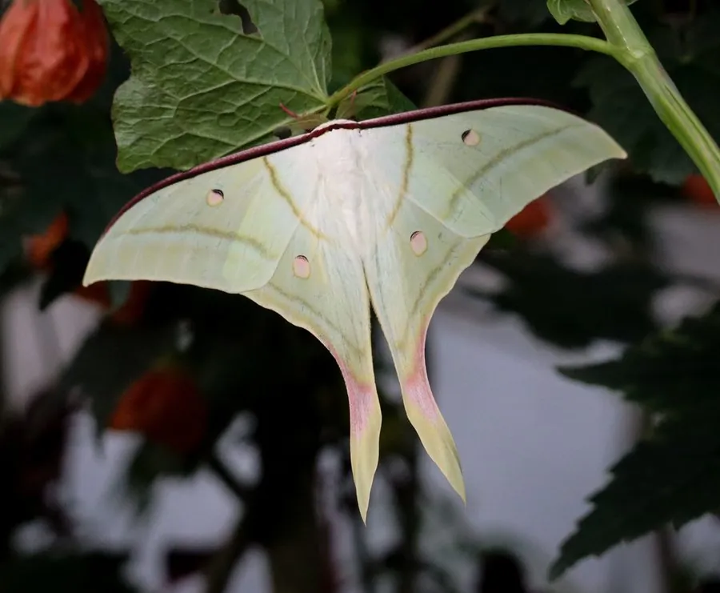

昆虫 · 动物界
绿尾大蚕蛾 Actias selene

翅面淡绿、后翅有细长尾突的大型蚕蛾，形似月神，成虫不取食，幼虫取食枫杨等阔叶树，中国南方常见。
- 分类
- 门节肢动物门纲昆虫纲目鳞翅目科天蚕蛾科属尾大蚕蛾属
- 栖息环境
- 阔叶林、林缘与果园，枫杨、柳树等寄主植物附近
- 地理分布
- 中国南方、日本、朝鲜半岛和东南亚
- 保护级别
- 暂无评估
物种志
绿尾大蚕蛾翅展约 10–13 cm，翅面淡绿色至粉绿色，前翅前缘有褐色带，各翅中央有一个淡黄色或粉色的月牙形斑，后翅拖着两条细长的尾突，整体像一只优雅的月神。雌蛾体型比雄蛾大，触角羽状。
它生活在阔叶林、林缘和果园附近，成虫在夜间活动，有趋光性，口器退化，不取食，寿命只有约 1–2 周，主要靠幼虫期积累的营养完成交配产卵。幼虫取食枫杨、柳树、核桃等阔叶树叶片，体型肥大，体色绿色，身体带瘤突。绿尾大蚕蛾分布于中国南方、日本、朝鲜半岛和东南亚，是亚洲著名的观赏蛾类，也常被灯光吸引到人类住所附近。它的茧为褐色，结在寄主植物上。
形态与习性
- 食性幼虫取食枫杨、柳树、核桃等叶片；成虫不取食
- 翅展约 10–13 cm
- 识别翅面淡绿，后翅有细长尾突和月牙斑
- 寿命成虫约 1–2 周，口器退化
- 分布中国南方、日本、朝鲜半岛和东南亚
趣味知识
- 绿尾大蚕蛾的尾突又细又长，形状像燕子的尾巴。
- 成虫口器退化，不吃东西，只能活一两个星期。
- 它夜里会被灯光吸引，有时会飞到居民楼的窗户上。